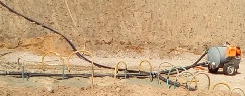

Magas talajvíz
A feltárás helyén a talajvíz a tervezett munkaszint fölött áll. A talajszerkezethez igazítjuk a rendszer kiosztását.
Mélyépítés · országos munkavégzés
Vákuumkutas rendszer finom homokhoz, iszaphoz és mélyépítési munkagödrökhöz.
A metszet a munkagödör és a talajvíz viszonyát mutatja. Görgetés közben követhető a telepítés és a süllyesztés.
A vízszint a kutak között is süllyed
A feltárás helyén a talajvíz a tervezett munkaszint fölött áll. A talajszerkezethez igazítjuk a rendszer kiosztását.
Kiöblítéses fúrással telepítjük a kutakat, majd gyűjtőcsövekkel kötjük össze őket.
A gépház elindul. A kutak körül kialakuló depressziós tölcsér fokozatosan a munkagödör alá viszi a vizet.
A vákuumhatás a vizet leszívja, a talajt pedig stabilizálja. A rendszer folyamatos üzeme 0-24 órás felügyeletet igényel.
A vákuumos talajvízszint-süllyesztés akkor segít, ha a magas talajvíz akadályozza a mélyépítést. Finom homokban és iszapban is használható, ahol más víztelenítési módszerek hatástalanok lehetnek.
A tényleges süllyesztés mértékét a talaj vízáteresztő képessége és a kutak távolsága határozza meg. Mélyebb gödör esetén több lépcsőből épülhet fel a rendszer.

Küldje el a helyszín adatait, a gödörszintet és a talajmechanikai anyagokat.
Víztelenítés ajánlatkérés